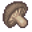
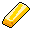

Elm 4f 3¶
| Map ID | elm_4f_3 |
| Type | Indoors / underground |
| Size | 15×20 tiles |
| World map | Elm 4f |
| Introduced | v0.7.14 |
| Enemy types | 11 |
| Quests | 0 |
| Containers | 2 |
Elm 4f 3 is an indoor map. It has no NPCs and 11 kinds of enemy. Exits lead to Elm 4f 4, Elm 4f 2, Elm 4f 5.
Map¶
Key to the numbers on the map
| # | What | Details |
|---|---|---|
| 1 | Exit (north) | to Elm 4f 4 |
| 2 | Exit (south) | to Elm 4f 2 |
| 3 | Exit (west) | to Elm 4f 5 |
| 4 | Container 1 | Boletus spelunca |
| 5 | Container 2 | Gold bar, Gold coins |
| 6 | Blocked passage | Requires carrying: Cage passkey |
Verified against v0.8.18 map data.
Connections¶
| Direction | Leads to | Region there | Map # |
|---|---|---|---|
| North | Elm 4f 4 | – | 1 |
| South | Elm 4f 2 | – | 2 |
| West | Elm 4f 5 | – | 3 |
Enemies¶
| Enemy | HP | Damage | Up to | Notes |
|---|---|---|---|---|
| Resurrected miner's skeleton | 66 | 8–10 | 12 | shares spawn with Foul miner's skeleton |
| Contaminated woodworm | 76 | 6–9 | 2 | shares spawn with Aggresive woodworm, Contaminated olm |
| Aggresive woodworm | 80 | 7–10 | 2 | shares spawn with Contaminated olm, Contaminated woodworm |
| Foul miner's skeleton | 82 | 6–12 | 12 | shares spawn with Resurrected miner's skeleton |
| Contaminated olm | 90 | 6–14 | 2 | shares spawn with Aggresive woodworm, Contaminated woodworm |
| Contaminated miner's skeleton | 101 | 10–15 | 2 | shares spawn with Prim guard skeleton |
| Prim guard skeleton | 104 | 12–16 | 2 | shares spawn with Contaminated miner's skeleton |
| Ravenous glowing mudfiend | 111 | 7–21 | 3 | shares spawn with Glowing mudfiend |
| Glowing mudfiend | 132 | 0–21 | 3 | shares spawn with Ravenous glowing mudfiend |
| Dried kazarite golem | 183 | 9–33 | 3 | shares spawn with Kazarite golem |
| Kazarite golem | 198 | 9–36 | 3 | shares spawn with Dried kazarite golem |
“Up to” is the most that can be alive at once from the spawn areas on this map.
Items & containers¶

Boletus spelunca 100% · ×1 to 5

Gold bar 100%- Gold coins 100% · ×2 to 15
Points of interest¶
- Blocked passage (#6): Requires carrying: Cage passkey
Version history¶
| Version | Change |
|---|---|
| v0.7.14 | Added |
| v0.8.4 | Map layout or objects changed |
Verified against v0.8.18 and every earlier release back to v0.7.0 (game data compared release by release).
Community notes¶
Written by players, not generated from game data. Observations: what players notice in-game · Lore: the in-world story · Trivia: real-world facts, references, development history · Theory / speculation: unconfirmed ideas; may just be unfinished content
Observations¶
No notes yet. Contributions are welcome: add a note.
Lore¶
No notes yet. Contributions are welcome: add a note.
Trivia¶
No notes yet. Contributions are welcome: add a note.
Theory / speculation¶
No notes yet. Contributions are welcome: add a note.
Technical information
| Map ID | elm_4f_3 |
| File | res/xml/elm_4f_3.tmx |
| Size | 15×20 tiles (480×640 px) |
| outdoors property | – |
| Layers drawn | base, ground, objects, above, top |
| Tilesets | map_bed_1, map_border_1, map_bridge_1, map_bridge_2, map_broken_1, map_cavewall_1, map_cavewall_2, map_cavewall_3, map_cavewall_4, map_cavewall_5, map_chair_table_1, map_chair_table_2, map_crate_1, map_cupboard_1, map_curtain_1, map_entrance_1, map_entrance_2, map_fence_1, map_fence_2, map_fence_3, map_fence_4, map_ground_1, map_ground_2, map_ground_3, map_ground_4, map_ground_5, map_ground_6, map_ground_7, map_ground_8, map_house_1, map_house_2, map_indoor_1, map_indoor_2, map_kitchen_1, map_outdoor_1, map_pillar_1, map_pillar_2, map_plant_1, map_plant_2, map_rock_1, map_rock_2, map_rock_3, map_roof_1, map_roof_2, map_roof_3, map_shop_1, map_sign_ladder_1, map_sign_ladder_omi2, map_table_1, map_trail_1, map_transition_1, map_transition_2, map_transition_3, map_transition_4, map_transition_6, map_tree_1, map_tree_2, map_wall_1, map_wall_2, map_wall_3, map_wall_4, map_window_1, map_window_2 |
| Map objects | spawn: 10, mapchange: 3, container: 2, key: 1 |
| World map position | segment elm4f, x -14, y -7 |
Data from v0.8.18